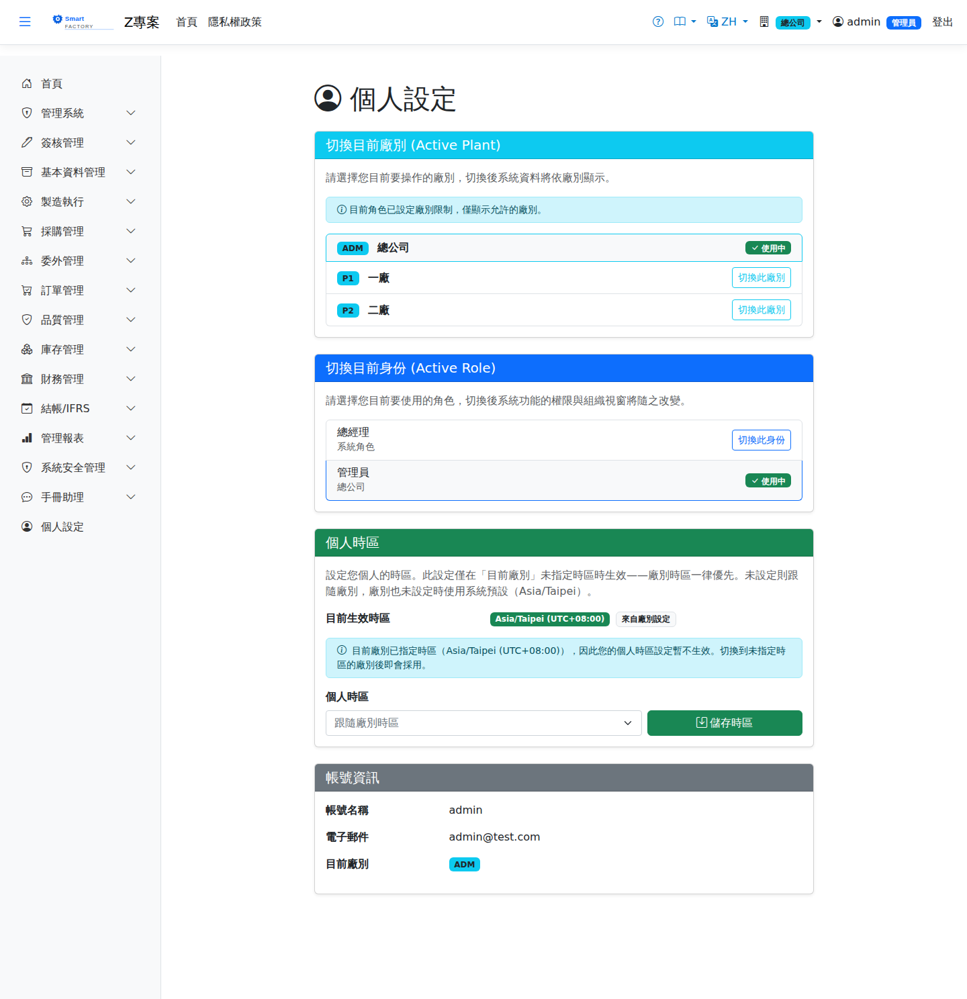

個人設定Personal Settings
個人設定是Personal settings is the 每個人自己的畫面one screen that belongs to each person：切換目前廠別、切換目前身份、設定個人時區，並查看自己的帳號資訊。這裡的設定只影響您自己，不會動到別人，也不需要管理員權限。: switch the current plant, switch the current role, set a personal time zone and look at your own account details. Nothing here affects anybody else, and no administrator permission is needed.

畫面區塊Sections of the screen
| 區塊Section | 說明Guide |
|---|---|
| 切換目前廠別Switch Active Plant | 列出您被指派到的所有廠，目前所在的那一廠標示為「使用中」。切換之後，Lists every plant you are assigned to, with the one you are in now marked "In Use". After switching, 全系統的單據與庫存都只會看到新的那一廠every document and stock figure in the system is that of the new plant only。若目前身份的可用廠別有限制，畫面上方會說明。. If the role currently in effect restricts which plants are available, a notice says so at the top. |
| 切換目前身份Switch Active Role | 一個人可以被指派多個角色，但A person may hold several roles, but 同一時間只有一個生效only one is in effect at a time。生效的那一個決定您看得到哪些選單、以及送出的單據由誰簽核。角色名稱下方顯示它所屬的組織單位，沒有掛組織單位的顯示為系統角色。. The one in effect decides which menus you see and who approves the documents you submit. The organization unit is shown under each role name; a role with no organization unit is shown as a system role. |
| 個人時區Personal Time Zone | 畫面最上方先顯示「目前生效時區」，旁邊的小標籤說明它來自哪一層（來自廠別設定／來自個人設定／系統預設）。下方的下拉可設定您自己的時區，留空即The time zone in effect is shown first, with a small label saying which level it came from — from plant setting, from personal setting, or system default. The dropdown below sets your own, and leaving it empty means 跟隨廠別時區follow the plant time zone。. |
| 帳號資訊Account Information | 唯讀：帳號、Email 與目前廠別。要修改帳號或 Email 請洽系統管理員（使用者管理畫面）。Read-only: user name, e-mail and current plant. To change the account name or e-mail, ask an administrator to do it on the user management screen. |
時區是怎麼決定的How the time zone is decided
畫面上所有時間的顯示，都依Every time shown on screen is converted using 一條三層的優先序a three-level order of precedence換算而來。系統內部一律以世界標準時間儲存，換算只影響顯示與日期篩選，不會改動既有資料。. Internally everything is stored in universal time; the conversion affects only what is displayed and how date filters are interpreted, never the stored data.
| 順序Order | 來源Source |
|---|---|
| 第一順位First | 目前廠別的預設時區（廠別管理畫面設定）。The default time zone of the plant you are in, set on the plant management screen. |
| 第二順位Second | 您的個人時區（本畫面設定；管理員也可在使用者管理畫面代設）。Your personal time zone, set here — an administrator can also set it for you on the user management screen. |
| 最後Last | 系統預設 Asia/Taipei。The system default, Asia/Taipei. |
操作步驟Steps
切換到另一個廠Switching to another plant
切換目前身份Switching the role in effect
設定個人時區Setting a personal time zone
相關畫面Related screens
使用者管理User Management（管理員代設語系與個人時區）、 (an administrator sets the language and personal time zone on somebody's behalf), 廠別管理Plant Management（廠別預設時區）、 (the plant default time zone), 角色管理Role Management（角色的可用廠別）。 (which plants a role may use).